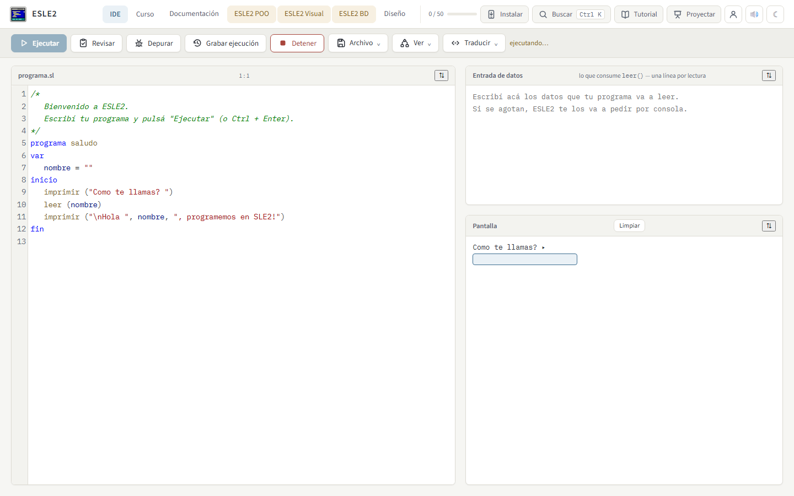
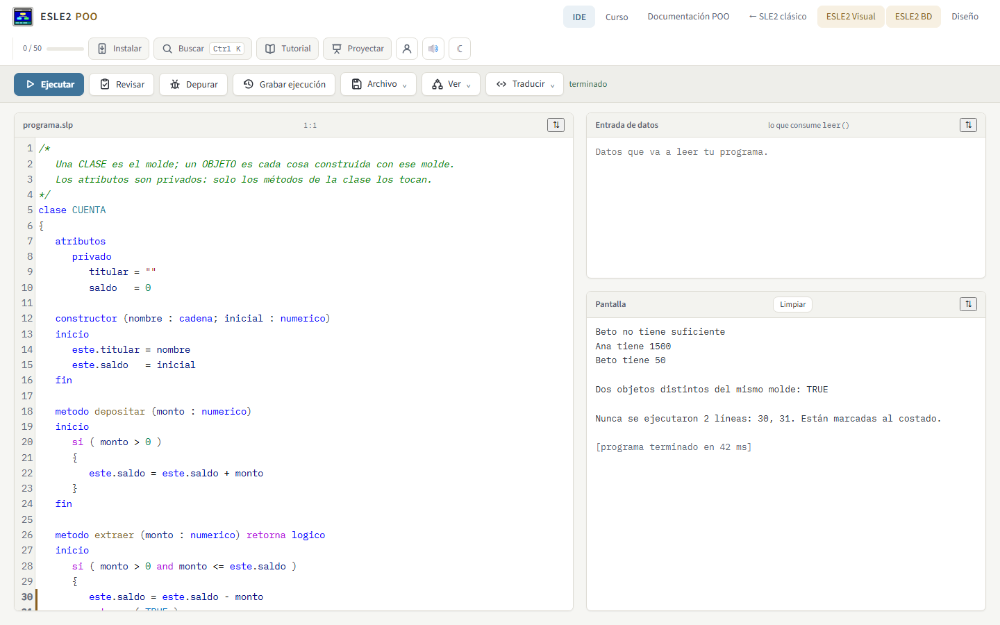
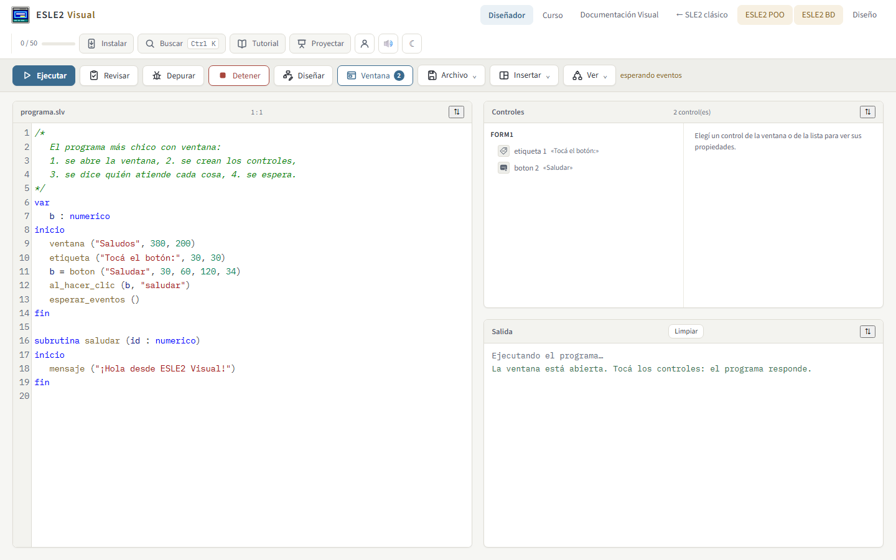
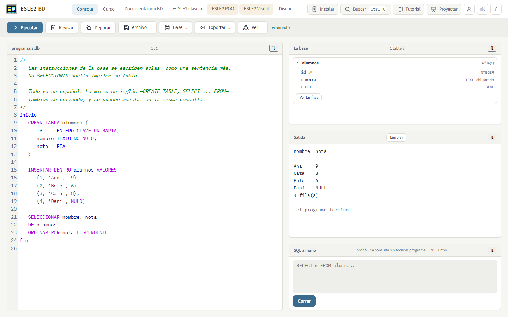
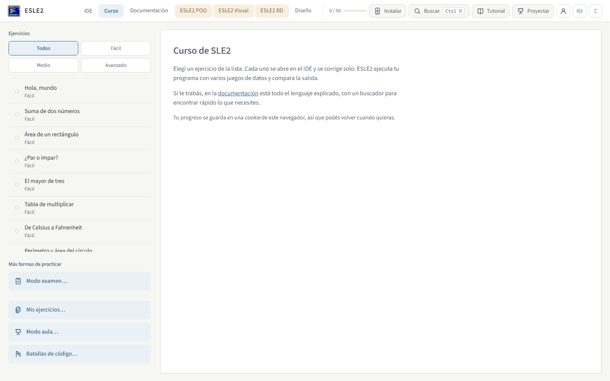

Aprendé a programar
escribiendo código de verdad.
ESLE2 es un IDE completo para el lenguaje SLE2 que corre entero en tu navegador. Escribís un programa, apretás Ejecutar y listo — sin instalar compiladores, sin configurar nada, sin depender de internet una vez que abriste la página.
Instalable como app · funciona sin conexión · tu progreso se guarda solo

El mismo SLE2, para cada tema del curso
Aprendés una sola sintaxis y la vas llevando a clases y objetos, a ventanas con botones, y a bases de datos con SQL en español.
ESLE2 clásico
Variables, condicionales, bucles y subrutinas. El punto de partida, con 50 ejercicios que se corrigen solos.

ESLE2 POO
Clases, objetos y atributos privados. La misma lógica del clásico, ahora organizada en moldes.

ESLE2 Visual
Ventanas, botones y dibujo. Diseñás la pantalla arrastrando controles y programás lo que hacen.

ESLE2 BD
Tablas y SQL en español o en inglés, mezclados en la misma consulta si hace falta.
Pensado para que lo único difícil sea aprender a programar
Todo lo demás —instalar, configurar, corregir a mano— ya está resuelto.
Se corrige solo
Cada ejercicio del curso corre tu programa con varios juegos de datos y compara la salida. Sabés al instante si funciona.
Traducí lo que escribiste
Un botón pasa tu programa SLE2 a JavaScript, Python, Java, C, C++ o C#, para ver el mismo algoritmo en otro lenguaje.
Sin instalar nada
Es una página web. También se puede instalar como aplicación y seguir usándola sin conexión a internet.
Depurador y prueba de escritorio
Ejecutá paso a paso, mirá cómo cambian las variables y armá la prueba de escritorio del pizarrón, automática.
Versiones y trabajo en dos compus
Guardá versiones de tu proyecto con una explicación y llevalo a otra computadora sin depender de ninguna cuenta.
Todo en español
Palabras clave, mensajes de error y documentación en español, pensado para cómo se enseña acá.
También se usa desde el frente del salón
Con formas de practicar y de tomar examen que no dependen de que cada alumno tenga la herramienta correcta instalada.
- ✓Modo examenUn límite de tiempo y una lista fija de ejercicios, sin salir del mismo IDE.
- ✓Modo aulaSeguí el progreso del grupo sobre una misma lista de ejercicios.
- ✓Batallas de códigoDos alumnos, el mismo ejercicio, a ver quién lo resuelve primero.
- ✓Progreso exportableCada alumno se lleva su avance en un archivo, sin depender de una cuenta en la nube.

Andá directo al editor.
No hay cuenta que crear ni nada que descargar antes. Abrís la página y ya podés escribir tu primer programa.
Abrir ESLE2 →